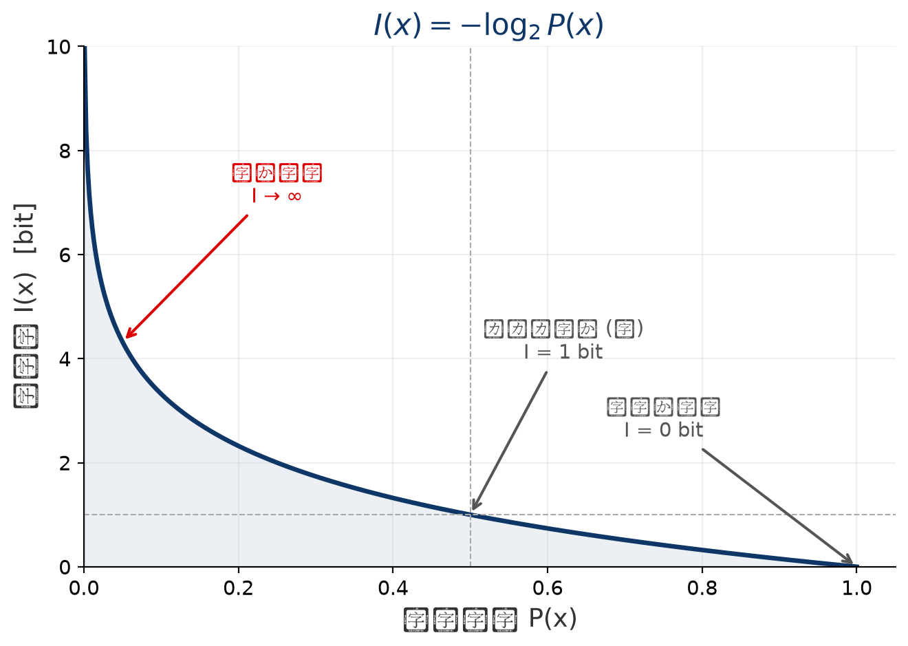
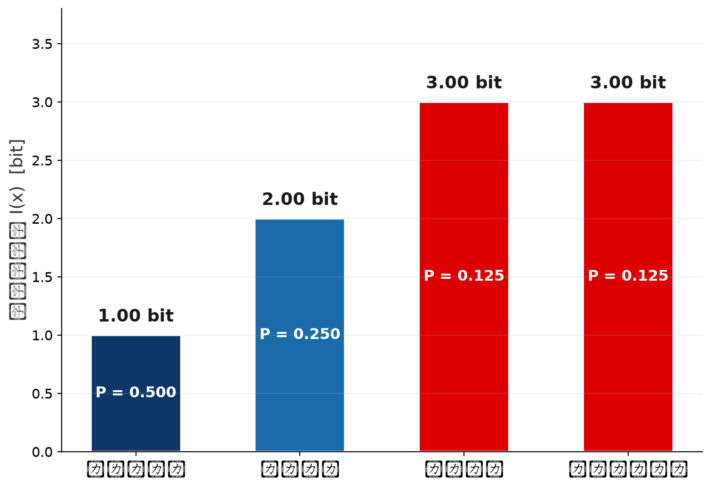
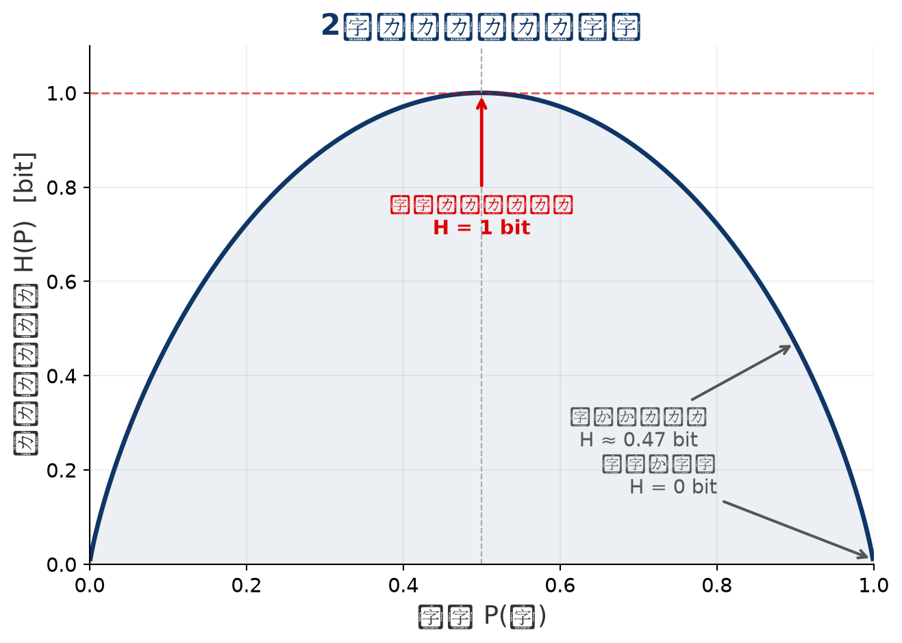
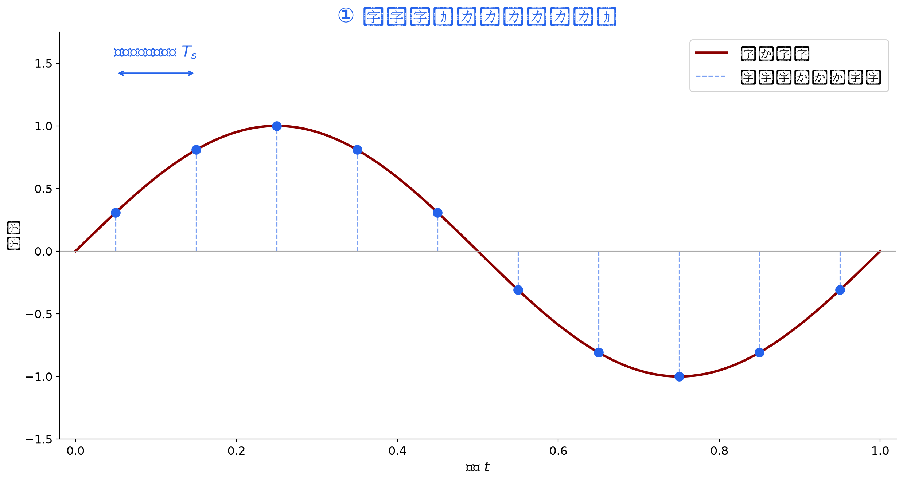
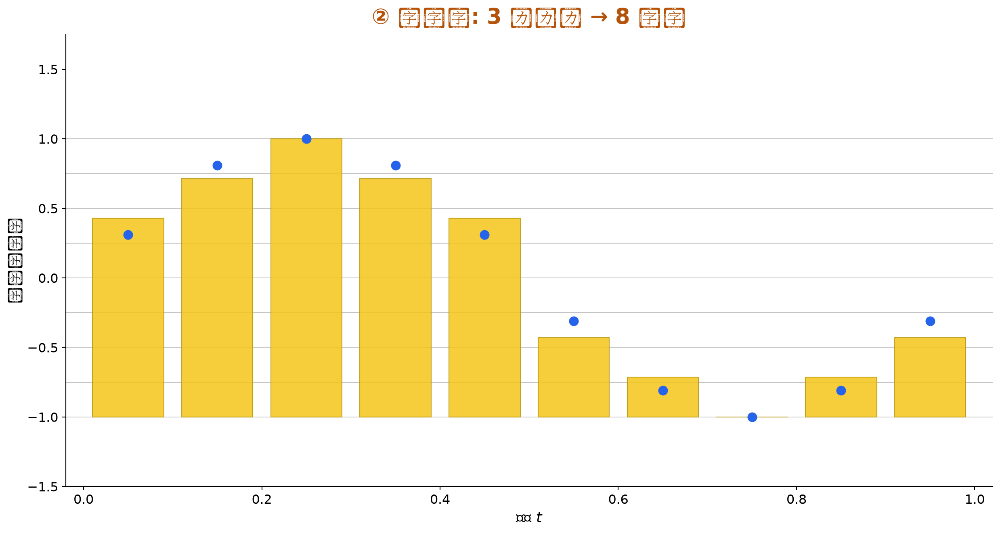
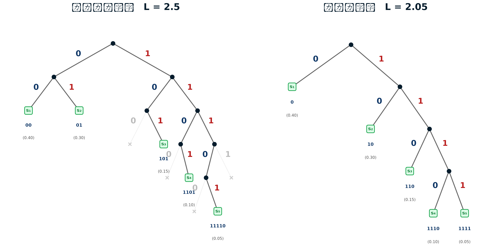
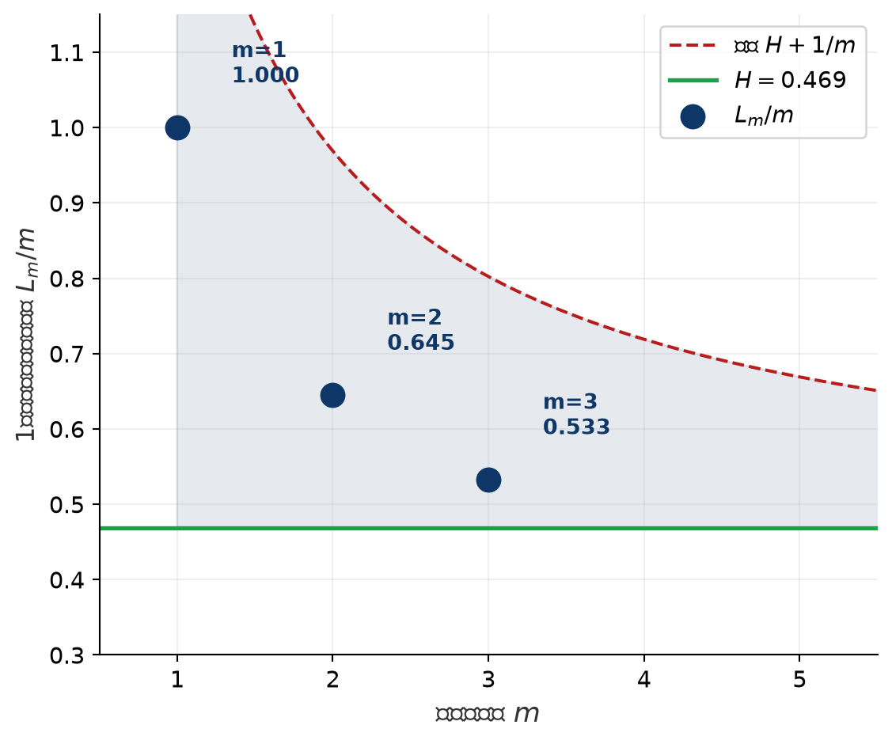

シャノンの通信モデル
2026年02月18日
シャノンの通信モデル
情報の価値
情報源符号化定理
シャノンは，価値ある情報を高速かつ正確に伝達するための原理を以下のように定式化
通信の本質は，「効率性（圧縮）」と「信頼性（耐性）」のトレードオフを制御すること
情報源符号化
情報源
通信路符号化
送信機
通信路
雑音(ノイズ)
通信路復号
受信機
情報源復号
受信者
符号化は，電話で言えば，音圧を電流に変換する過程．モールス信号であれば，メッセージをある決められた方式で短点・長点・空白の列に変換する過程．
分析発表では，理解力差や注意散漫といった認知ノイズの対策として，スライド整理や図解を行いますが， これは，メッセージが一部失われても意味を復元できるようにするプレゼンにおける誤り訂正
プロトコル詳細定義
regmonkey_abstract_summary:
title_fontsize: 0.85em
bullet_fontsize: 0.7em
keystat_fontsize: 0.7em
children:
- title: Semantic Alignment Protocol（用語・前提同期）
description:
- 主要用語の定義を事前に明示
- 前提条件・分析スコープを明確化
- 「何を議論しないか」も明示
width: [50, 50]
- title: Formatting Convention Protocol（提示形式合意）
description:
- 結論→根拠→示唆の順序を固定
- スライド1枚1メッセージ原則
- 色・太字・アイコンの意味を統一
width: [50, 50]regmonkey_abstract_summary:
title_fontsize: 0.85em
bullet_fontsize: 0.7em
keystat_fontsize: 0.7em
children:
- title: Feedback Loop Protocol<br>（確認・応答規約）
description:
- 要点ごとに理解確認ポイントを設置
- Q&Aの時間と形式を明示
- 不明点は即時再説明要求可能とする
width: [50, 50]
- title: Decision Criteria Alignment Protocol（評価基準共有）
description:
- 意思決定の判断軸を事前提示
- 成功指標（KPI）を明確化
- 最終アウトプットの期待水準を合意
width: [50, 50]シャノンの通信モデル
情報の価値
情報源符号化定理
情報が出現する確率を用いて情報量を定式化する
自己情報量（Shannon Information Content）
事象 \(x\) の生起確率を \(P(x)\) としたとき，その事象がもつ 情報量 \(I(x)\) は
\[ I(x) = -\log_2 P(x) \quad [\text{bit}] \]
直感的理解
情報量の性質

ブラインドテイスティングで品種を当てたときの「驚き」の大きさ
設定

計算
| 品種 | \(P(x)\) | \(I(x) = -\log_2 P(x)\) |
|---|---|---|
| シャルドネ | \(\frac{4}{8} = 0.5\) | \(1.00\) bit |
| アリゴテ | \(\frac{2}{8} = 0.25\) | \(2.00\) bit |
| カベルネ | \(\frac{1}{8} = 0.125\) | \(3.00\) bit |
| ピノノワール | \(\frac{1}{8} = 0.125\) | \(3.00\) bit |
解釈
確率分布全体が持つ「平均的な情報量」を定式化する
情報エントロピー（Shannon Entropy）
確率分布 \(P = \{P(x_1), P(x_2), \ldots, P(x_n)\}\) に対して，情報エントロピー \(H(P)\) は
\[ H(P) = -\sum_{i=1}^{n} P(x_i) \log_2 P(x_i) = \mathbb{E}[I(x)] \quad [\text{bit}] \]
各事象の情報量 \(I(x_i)\) を，その生起確率 \(P(x_i)\) で重み付けした期待値
エントロピーの性質

シャノンの通信モデル
情報の価値
情報源符号化定理
アナログ信号
標本化 (Sampling)
量子化
符号化
デジタルデータ


符号の性質による分類
一意復号可能
瞬時符号（prefix-free）
必要十分条件
| 文字 | Case 1 (等長符号) |
Case 2 (非一意) |
Case 3 (前置符号) |
Case 4 (非一意) |
|---|---|---|---|---|
| A | 00 | 0 | 0 | 0 |
| B | 01 | 01 | 01 | 1 |
| C | 10 | 011 | 011 | 10 |
| D | 11 | 11 | 111 | 11 |
| 一意復号可能 | ✔ | ✘ | ✔ | ✘ |
| 瞬時符号 | ✔ | ✘ | ✘ | ✘ |
| 備考 | 等長符号 | "011"=C or A+D | A⊂B⊂C（前置） | "10"=C or B+A |
練習問題
01101011 というパターンの文字列が与えられた時，Case 3プロトコルを活用する時，復号可能か？平均符号長
\[ L = \sum_{i=1}^np_il_i \ \ (\text{理論限界:} L \geq H) \]
| 文字 | 出現確率 \(p_i\) (偏りあり 4:2:1:1) |
Case 1: 等長 (固定長 2bit) |
Case 2: 最適化 (確率に比例) |
Case 3: 逆配分 (非効率) |
|---|---|---|---|---|
| A | 50% (1/2) | 00 (2) | 0 (1) | 111 (3) |
| B | 25% (1/4) | 01 (2) | 10 (2) | 110 (3) |
| C | 12.5% (1/8) | 10 (2) | 110 (3) | 10 (2) |
| D | 12.5% (1/8) | 11 (2) | 111 (3) | 0 (1) |
| 平均符号長 (\(L\)) | 2.00 | 1.75 | 2.625 | |
| 情報エントロピー (\(H\)) | 1.75 bits | |||
シャノン符号化法
次の条件を満たす無記憶情報源の２元符号（シャノン符号）を構成する
\[ -\log P(s_k) \leq l_k < -\log P(s_k) + 1 \]
Setup
情報源 \(S = \{s_1, s_2, s_3, s_4, s_5\}\)，各記号の発生確率:
\[ P(s_1) = 0.4, \quad P(s_2) = 0.3, \quad P(s_3) = 0.15, \quad P(s_4) = 0.1, \quad P(s_5) = 0.05 \]
ステップ１
発生確率の大きい順に並べる（上記は既にソート済み）
ステップ２: 符号長の決定
次の条件を満たす正の整数を符号長 \((l_1, l_2, l_3, l_4, l_5)\) とする:
\[ -\log_2 P(s_k) \leq l_k < -\log_2 P(s_k) + 1 \]
| 記号 | 条件 | 符号長 |
|---|---|---|
| \(s_1\) | \(-\log_2 0.4 \leq l_1 < -\log_2 0.4 + 1\) | \(l_1 = 2\) |
| \(s_2\) | \(-\log_2 0.3 \leq l_2 < -\log_2 0.3 + 1\) | \(l_2 = 2\) |
| \(s_3\) | \(-\log_2 0.15 \leq l_3 < -\log_2 0.15 + 1\) | \(l_3 = 3\) |
| 記号 | 条件 | 符号長 |
|---|---|---|
| \(s_4\) | \(-\log_2 0.1 \leq l_4 < -\log_2 0.1 + 1\) | \(l_4 = 4\) |
| \(s_5\) | \(-\log_2 0.05 \leq l_5 < -\log_2 0.05 + 1\) | \(l_5 = 5\) |
ステップ３: 累積確率の計算
\[ \begin{aligned} P_1 &= 0 \\ P_2 &= P_1 + P(s_1) = 0.4 \\ P_3 &= P_2 + P(s_2) = 0.7 \\ P_4 &= P_3 + P(s_3) = 0.85 \\ P_5 &= P_4 + P(s_4) = 0.95 \end{aligned} \]
ステップ４: ２進数展開
\[ \begin{aligned} P_1 = 0 &\to 0.00000\ldots \\ P_2 = 0.4 &\to 0.01100\ldots \\ P_3 = 0.7 &\to 0.10110\ldots \\ P_4 = 0.85 &\to 0.11011\ldots \\ P_5 = 0.95 &\to 0.11110\ldots \end{aligned} \]
ステップ５: 符号の割当
小数点以下 \(l_k\) 桁を \(s_k\) の符号とする:
| 記号 | 確率 | 累積確率(2進) | 符号長 | 符号 |
|---|---|---|---|---|
| \(s_1\) | 0.4 | 0.00000… | 2 | 00 |
| \(s_2\) | 0.3 | 0.01100… | 2 | 01 |
| \(s_3\) | 0.15 | 0.10110… | 3 | 101 |
| \(s_4\) | 0.1 | 0.11011… | 4 | 1101 |
| \(s_5\) | 0.05 | 0.11110… | 5 | 11110 |
| 平均符号長 (\(L\)) | 2.5 | |||
\[ L = 2 \times 0.4 + 2 \times 0.3 + 3 \times 0.15 + 4 \times 0.1 + 5 \times 0.05 = 2.5 \]
REMARKS
シャノン・ファノ符号
記号を発生確率の大きい順に並べ，確率の合計がほぼ等しくなるように再帰的に２群に分割し，各群に 0/1 を割り当てて符号を構成する
Setup
情報源 \(S = \{s_1, s_2, s_3, s_4, s_5\}\)，各記号の発生確率:
\[ P(s_1) = 0.4, \quad P(s_2) = 0.3, \quad P(s_3) = 0.15, \quad P(s_4) = 0.1, \quad P(s_5) = 0.05 \]
分割手順
各ステップで確率の合計差が最小となる位置で分割し，上位群に 0，下位群に 1 を割り当てる:
| 分割 | 上位群 (→0) | 下位群 (→1) | 確率差 |
|---|---|---|---|
| 第1分割 | \(\{s_1\}\) 合計 0.40 | \(\{s_2, s_3, s_4, s_5\}\) 合計 0.60 | 0.20 |
| 第2分割 | \(\{s_2\}\) 合計 0.30 | \(\{s_3, s_4, s_5\}\) 合計 0.30 | 0.00 |
| 第3分割 | \(\{s_3\}\) 合計 0.15 | \(\{s_4, s_5\}\) 合計 0.15 | 0.00 |
| 第4分割 | \(\{s_4\}\) 合計 0.10 | \(\{s_5\}\) 合計 0.05 | 0.05 |
符号の構成過程
各分割で割り当てたビットを連結:
\[ \begin{aligned} s_1 &: \underbrace{0}_{\text{第1}} \to \texttt{0} \\ s_2 &: \underbrace{1}_{\text{第1}}\underbrace{0}_{\text{第2}} \to \texttt{10} \\ s_3 &: \underbrace{1}_{\text{第1}}\underbrace{1}_{\text{第2}}\underbrace{0}_{\text{第3}} \to \texttt{110} \\ s_4 &: \underbrace{1}_{\text{第1}}\underbrace{1}_{\text{第2}}\underbrace{1}_{\text{第3}}\underbrace{0}_{\text{第4}} \to \texttt{1110} \\ s_5 &: \underbrace{1}_{\text{第1}}\underbrace{1}_{\text{第2}}\underbrace{1}_{\text{第3}}\underbrace{1}_{\text{第4}} \to \texttt{1111} \end{aligned} \]
結果
| 記号 | 確率 | 符号長 | 符号 |
|---|---|---|---|
| \(s_1\) | 0.4 | 1 | 0 |
| \(s_2\) | 0.3 | 2 | 10 |
| \(s_3\) | 0.15 | 3 | 110 |
| \(s_4\) | 0.1 | 4 | 1110 |
| \(s_5\) | 0.05 | 4 | 1111 |
| 平均符号長 (\(L\)) | 2.05 | ||
\[ L = 1 \times 0.4 + 2 \times 0.3 + 3 \times 0.15 + 4 \times 0.1 + 4 \times 0.05 = 2.05 \]
REMARKS

ハフマン符号
発生確率の小さい記号から順にペアにまとめ，ボトムアップに２分木を構築して最適な瞬時復号可能符号を得る
Setup
情報源 \(S = \{s_1, s_2, s_3, s_4, s_5\}\)，各記号の発生確率:
\[ P(s_1) = 0.4, \quad P(s_2) = 0.3, \quad P(s_3) = 0.15, \quad P(s_4) = 0.1, \quad P(s_5) = 0.05 \]
マージ手順
各ステップで確率が最小の２ノードをマージし，新たなノードを作る:
| ステップ | マージ対象 | 新ノード | キュー（確率昇順） |
|---|---|---|---|
| 初期 | — | — | \(s_5\)(0.05), \(s_4\)(0.10), \(s_3\)(0.15), \(s_2\)(0.30), \(s_1\)(0.40) |
| 1 | \(s_5\)(0.05) + \(s_4\)(0.10) | \(n_1\)(0.15) | \(s_3\)(0.15), \(n_1\)(0.15), \(s_2\)(0.30), \(s_1\)(0.40) |
| 2 | \(s_3\)(0.15) + \(n_1\)(0.15) | \(n_2\)(0.30) | \(n_2\)(0.30), \(s_2\)(0.30), \(s_1\)(0.40) |
| 3 | \(n_2\)(0.30) + \(s_2\)(0.30) | \(n_3\)(0.60) | \(s_1\)(0.40), \(n_3\)(0.60) |
| 4 | \(s_1\)(0.40) + \(n_3\)(0.60) | root(1.00) | root(1.00) |
符号の構成過程
各マージで左の子に 0，右の子に 1 を割り当てる:
\[ \begin{aligned} s_1 &: \underbrace{0}_{\text{root左}} \to \texttt{0} \\ s_2 &: \underbrace{1}_{\text{root右}}\underbrace{0}_{n_3\text{左}} \to \texttt{10} \\ s_3 &: \underbrace{1}_{\text{root右}}\underbrace{1}_{n_3\text{右}}\underbrace{0}_{n_2\text{左}} \to \texttt{110} \\ s_4 &: \underbrace{1}_{\text{root右}}\underbrace{1}_{n_3\text{右}}\underbrace{1}_{n_2\text{右}}\underbrace{1}_{n_1\text{右}} \to \texttt{1111} \\ s_5 &: \underbrace{1}_{\text{root右}}\underbrace{1}_{n_3\text{右}}\underbrace{1}_{n_2\text{右}}\underbrace{0}_{n_1\text{左}} \to \texttt{1110} \end{aligned} \]
結果
| 記号 | 確率 | 符号長 | 符号 |
|---|---|---|---|
| \(s_1\) | 0.4 | 1 | 0 |
| \(s_2\) | 0.3 | 2 | 10 |
| \(s_3\) | 0.15 | 3 | 110 |
| \(s_4\) | 0.1 | 4 | 1111 |
| \(s_5\) | 0.05 | 4 | 1110 |
| 平均符号長 (\(L\)) | 2.05 | ||
\[ L = 1 \times 0.4 + 2 \times 0.3 + 3 \times 0.15 + 4 \times 0.1 + 4 \times 0.05 = 2.05 \]
REMARKS
ブロック化（拡大情報源）
記号を \(m\) 個ずつまとめた ブロック を新たな記号とみなしてハフマン符号化を行う． \(m\) ブロックの平均符号長を \(L_m\) とすると，1記号あたりの平均符号長 \(L_m/m\) は次を満たす:
\[ H(S) \leq \frac{L_m}{m} < H(S) + \frac{1}{m} \]
Setup
2値情報源 \(S = \{0, 1\}\)，\(P(0) = 0.9,\ P(1) = 0.1\)，\(H(S) = 0.469\) bits/記号
\(m = 1\)（記号単位）
\(m = 2\)（2記号ブロック）
| ブロック | 確率 | 符号 | 符号長 |
|---|---|---|---|
| 00 | 0.81 | 0 | 1 |
| 01 | 0.09 | 10 | 2 |
| 10 | 0.09 | 111 | 3 |
| 11 | 0.01 | 110 | 3 |
| \(L_2\) | 1.29 | ||
\(L_2/2 = 0.645\) bits/記号（効率: \(72.7\%\)）
ブロックサイズと符号化効率
| ブロック長 \(m\) | 超記号数 | \(L_m\) | \(L_m / m\) | 上界 \(H + 1/m\) | 効率 |
|---|---|---|---|---|---|
| 1 | 2 | 1.00 | 1.000 | 1.469 | 46.9% |
| 2 | 4 | 1.29 | 0.645 | 0.969 | 72.7% |
| 3 | 8 | 1.60 | 0.533 | 0.802 | 88.0% |
| \(m \to \infty\) | — | — | → 0.469 | → 0.469 | → 100% |

REMARKS
ハフマン符号化は ①最小ヒープによる木の構築 と ②再帰的な符号語の生成 の2段階で実装できる
擬似コード
Python 実装
import heapq
from collections import Counter
class HuffmanNode:
def __init__(self, key=None, count=0, left=None, right=None):
self.key = key
self.count = count
self.left = left
self.right = right
def __lt__(self, other): # ヒープの比較演算
return self.count < other.count
class Huffman:
def encode(self, strings):
self.encode_dict = {}
self.decode_dict = {}
counter = Counter(strings) # ①出現頻度を集計
heap = [HuffmanNode(k, v) for k, v in counter.items()]
heapq.heapify(heap) # ②最小ヒープ構築
while len(heap) > 1: # ③最小2ノードをマージ
left = heapq.heappop(heap)
right = heapq.heappop(heap)
merged = HuffmanNode(
None, left.count + right.count, left, right
)
heapq.heappush(heap, merged)
self.tree = heap[0] # ④根ノード
self._generate_code(self.tree, "")
return "".join( # ⑥符号語に置換
self.encode_dict[c] for c in strings
)
def _generate_code(self, node, code): # ⑤再帰走査
if node.key is not None: # 葉ノード
self.encode_dict[node.key] = code
self.decode_dict[code] = node.key
return
self._generate_code(node.left, code + "0") # 左→"0"
self._generate_code(node.right, code + "1") # 右→"1"先ほどの実装を用いた \(S = \{s_1, s_2, s_3, s_4, s_5\}\), \(P = (0.4, 0.3, 0.15, 0.1, 0.05)\) での実行例
エンコード
>>> huff = Huffman()
>>> symbols = list("aaaaaaaaabbbbbbcccdde") # 頻度比 = 9:6:3:2:1 ≈ P
>>> encoded = huff.encode(symbols)
>>> for k, v in sorted(huff.encode_dict.items()):
... print(f" {k} -> {v}")
a -> 0
b -> 10
c -> 110
d -> 1110
e -> 1111
>>> print(f"encoded = {encoded}")
encoded = 000000000101010101010110110110111011101111
>>> print(f"圧縮率: {len(encoded)}/{len(symbols)*3} "
... f"= {len(encoded)/(len(symbols)*3):.2%}")
圧縮率: 42/60 = 70.00%デコード
>>> def decode(tree, bits):
... result = []
... node = tree
... for b in bits:
... node = node.left if b == "0" else node.right
... if node.key is not None: # 葉に到達
... result.append(node.key)
... node = tree # 根に戻る
... return "".join(result)
>>> decoded = decode(huff.tree, encoded)
>>> print(f"decoded = {decoded}")
decoded = aaaaaaaaabbbbbbcccdde
>>> decoded == "".join(symbols)
TrueREMARKS
Regmonkey Presentation. ©Ryo Nakagami. All rights reserved.